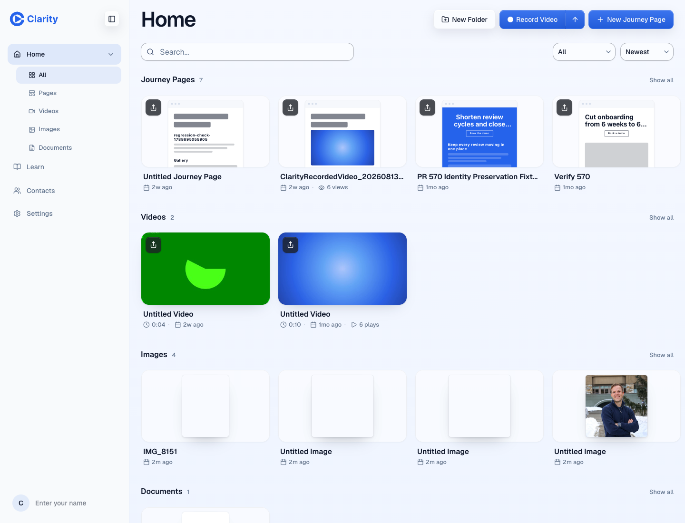
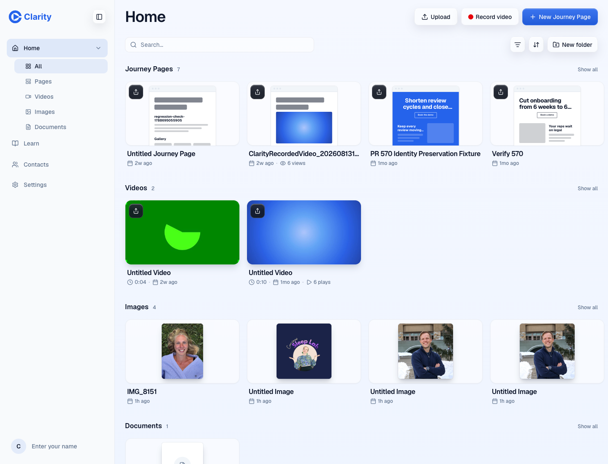
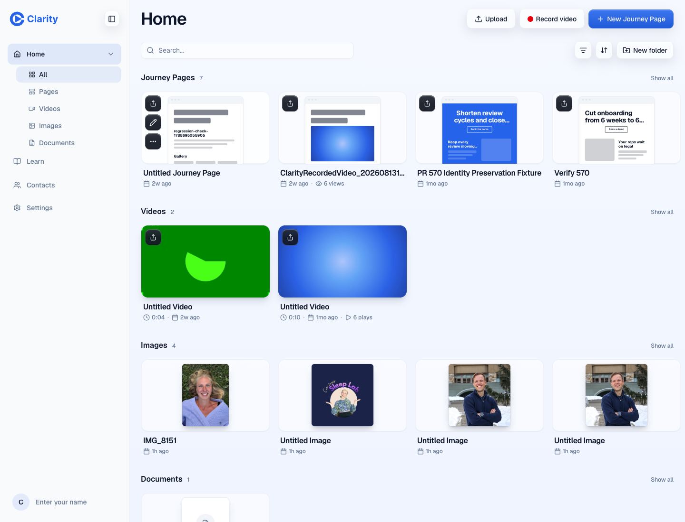
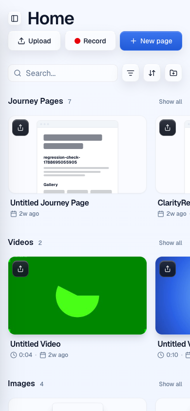

Preview https://pr-646.clarity-video.workers.dev at 76081c74e49c277b37abb0ec4425e5d76d1df419 (branch head e90de8b3 merged onto main). Run 20260921T141326Z UTC. Evidence run: this capture. Independent checks: structure review (CLEAN), security invariant review (BLOCKER found and fixed: owner-scoped outline read), delta re-review (CLEAN). Visual reference: the baseline captured from the preview William approved before the Tailwind port.
| Check | Result | Note |
|---|---|---|
| Doctor: preview sha matches expected, session identity present | pass | OK sha: matches 76081c74e49c277b37abb0ec4425e5d76d1df419 OK auth: identity present OK all checks green "focused": false, "tipOpacity": "0" |
| Frost cards are the default (no ?cards param) | pass | stage overflow hidden, radius 14px, frost oklab(1 0 0 / 0.55) |
| Journey page card geometry matches approved baseline (±2px) | pass | stage 297,201,270,152 → 297,193,270,152; mini 354,226,157,198 → 354,218,157,199 |
| Mini page is cropped by the stage (window taller than stage) | pass | mini height 199 vs stage 152 |
| Hover reveals Share, Edit, More on a page card | pass | Open@270px, Actions@32px, Edit@32px, Share@32px |
| Meta row shows plays on a video and views on a page | pass | ClarityRecordedVideo_20260813145328.mp4 | 2w ago | · | 6 views | More || Untitled Video | 0:10 | · | 1mo ago | · | 6 plays | More | Edit | Shar |
| Phone width (390px): cards fit, no horizontal overflow, stage still crops | pass | card width 286px |
| Router owner scoping: unit tests (planted foreign page id gets no outline, no view count) | pass | editor/tests/library-journey-page-outline.test.ts, library-view-counts.test.ts (pass in CI) |
| CSS budget, LOC ratchet, CI invariants | pass | pass on head (see Gate 0 in PR body) |




The control browser's log spans sessions since 2026-09-15 and includes local dev-server refusals from earlier runs; on this preview pass the only failing requests are the analytics beacon (/api/rum/events 403, pre-existing on previews) and aborted image loads on navigation. Key API requests proving wired-not-mocked: /api/tree/root, /api/tree/decorations (carry outline, pageId, videoId, metrics.viewCount from the router).